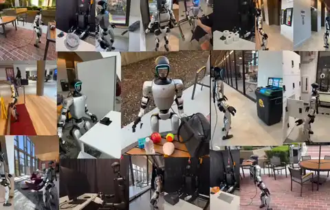

Humanoid Everyday: A Comprehensive Robotic Dataset for Open-World Humanoid Manipulation
170 stars on GitHubIEEE International Conference on Robotics and Automation (ICRA), 2026
- Best Paper Award, CVPR 2026 EAI Workshop
- Oral Presentation, ICRA 2026 From Data to Decisions Workshop
@misc{zhao2025humanoideverydaycomprehensiverobotic,
title={Humanoid Everyday: A Comprehensive Robotic Dataset for Open-World Humanoid Manipulation},
author={Zhenyu Zhao and Hongyi Jing and Xiawei Liu and Jiageng Mao and Abha Jha and Hanwen Yang and Rong Xue and Sergey Zakharov and Vitor Guizilini and Yue Wang},
year={2025},
eprint={2510.08807},
archivePrefix={arXiv},
primaryClass={cs.RO},
url={https://arxiv.org/abs/2510.08807},
}